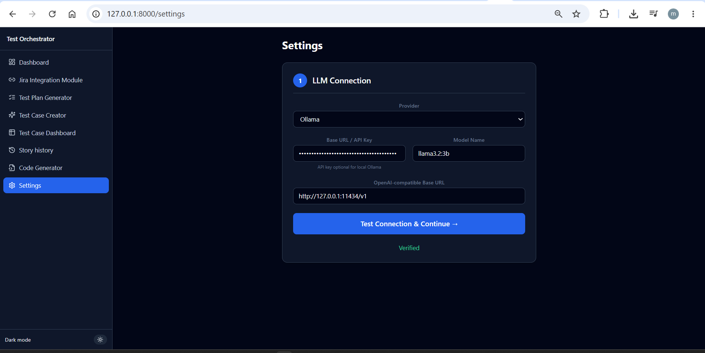
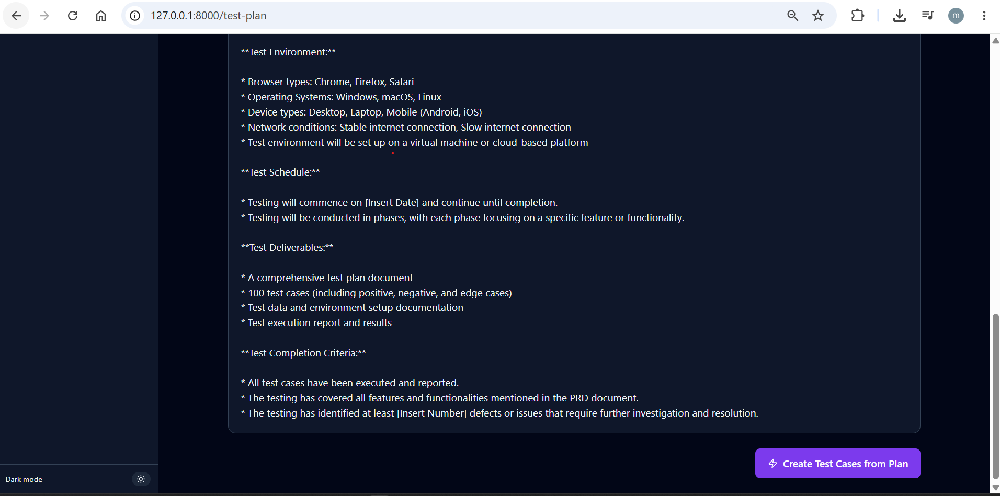
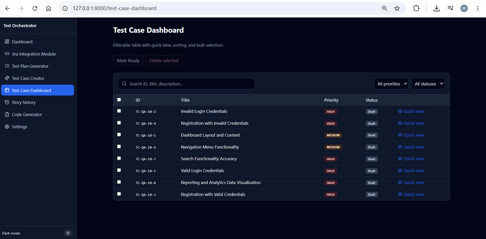
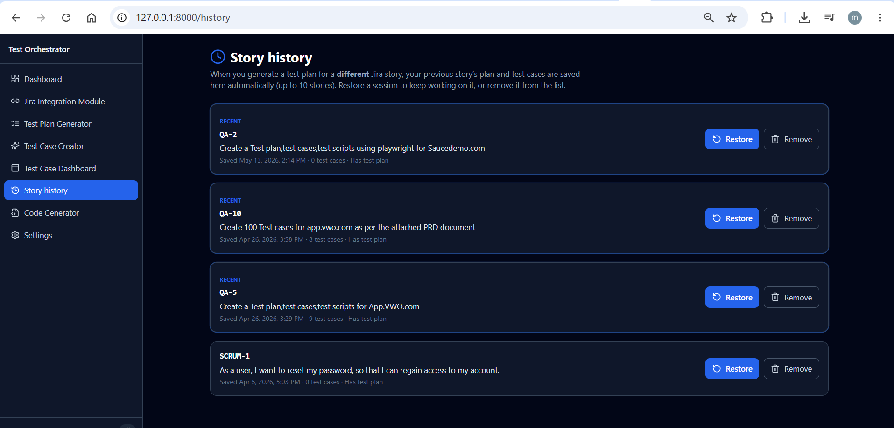
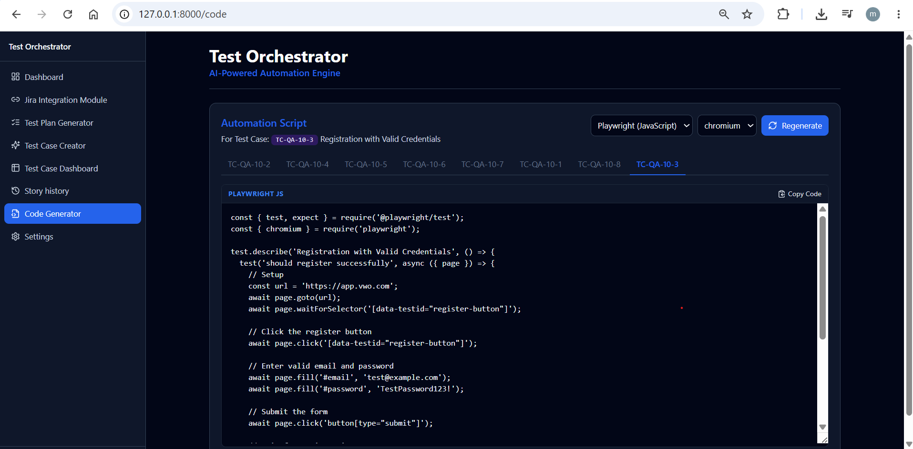

Test Orchestrator
Full-stack web app: connect Jira, generate AI test plans and structured test cases for real projects (e.g. app.vwo.com), then export Playwright or Selenium scripts — dashboard, history, and code in one UI.
How the app flows
Screens below follow the same order you use in the app — from Jira story to automation code.
VWO / PRD story
100 cases scope
TC-QA-10-*
app.vwo.com
What it does
- Connect Jira & LLM Verify Jira URL + token; configure Groq, Gemini, or Ollama (e.g. llama3.2:3b).
- Fetch stories & generate plan Pick QA-10 → AI writes a markdown plan for app.vwo.com testing.
- Create & manage test cases Structured cases with steps and expected results; dashboard filters and bulk actions.
- Generate Playwright / Selenium code Per-case scripts (e.g. registration flow on https://app.vwo.com). Story history keeps prior sessions.
Example story (from Jira — this demo)
Jira: QA-10 Title: Create 100 Test cases for app.vwo.com as per the attached PRD document User story: Create 100 test cases for app.vwo.com as per the attached PRD document. Workflow in app: Jira Integration → Generate Test Plan → Create Test Cases from Plan → Test Case Creator / Dashboard → Code Generator (Playwright JS, chromium)
Sample output: generated test cases (QA-10)
8 cases mapped to QA-10 — excerpt matching the app dashboard & creator
| ID | Title | Steps (summary) | Expected | Priority |
|---|---|---|---|---|
| TC-QA-10-2 | Invalid Login Credentials | Open app.vwo.com → invalid email/password → login | Failed login | High |
| TC-QA-10-4 | Registration with Invalid Credentials | Open app → register → invalid credentials | Failed registration | High |
| TC-QA-10-5 | Dashboard Layout and Content | Open app → dashboard tab | Correct layout and content | Medium |
| TC-QA-10-3 | Registration with Valid Credentials | Open app → register → valid email/password → submit | Successful registration | High |
| TC-QA-10-1 | Valid Login Credentials | Open app → valid login | Successful login | High |
Dashboard KPIs for this run: 1 test plan, 8 test cases, 3 with generated code, 4 stories in history. Plan objective: comprehensive VWO app testing per PRD (login, registration, dashboard, navigation, search).
Sample output: Playwright code (TC-QA-10-3)
// Playwright (JavaScript) — Registration with Valid Credentials
const { test, expect } = require('@playwright/test');
test.describe('Registration with Valid Credentials', () => {
test('should register successfully', async ({ page }) => {
await page.goto('https://app.vwo.com');
await page.click('[data-testid="register-button"]');
await page.fill('#email', 'test@example.com');
await page.fill('#password', 'TestPassword123!');
await page.click('button[type="submit"]');
});
});
Quick setup
Local (full features — screenshots below)
- Install Node.js + Python 3.11+
- Run START.bat in
Test Orchestrator - Open http://127.0.0.1:8000 → Settings (LLM) → Jira → QA-10 → plan → cases → code
Vercel UI only
- Open Live App for the React UI
- Host
server/on Railway/Render and setVITE_API_URLfor API calls
Important note
Screenshots are from a local run (127.0.0.1:8000). Vercel hosts the frontend;
FastAPI + your LLM/Jira keys are required for live generation.
Screenshots (workflow order)








